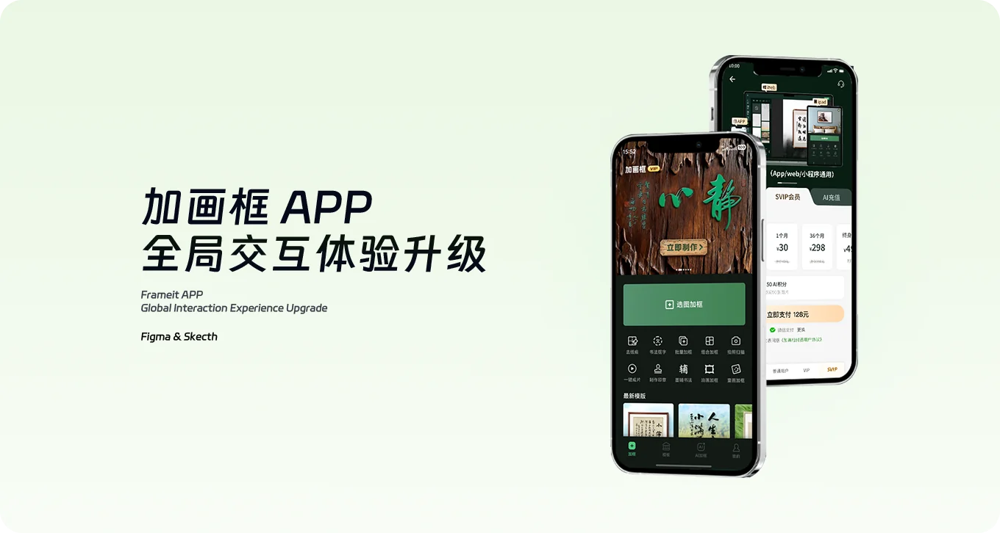
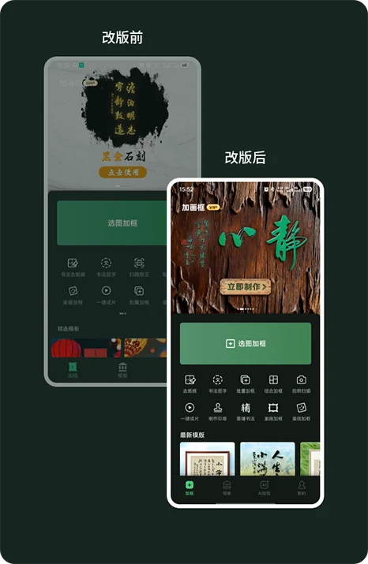
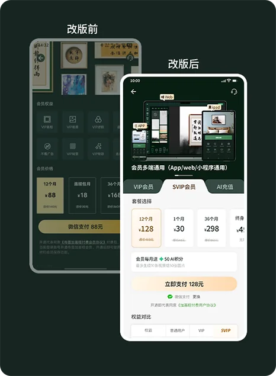
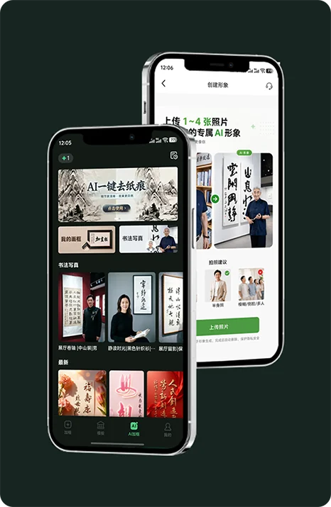
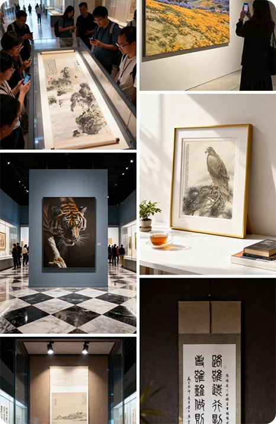
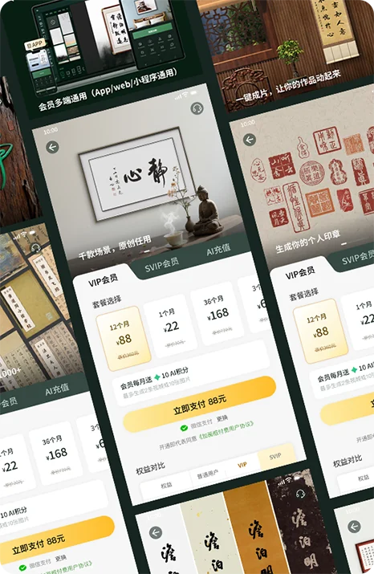
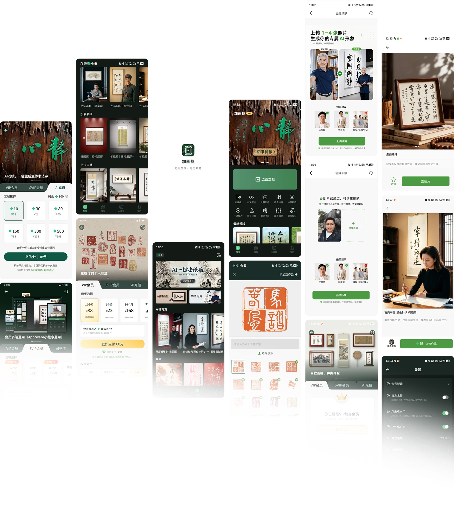

加画框
为画加框，为艺增色

APP 迭代目标
AI 迭代以简化操作、提升质感、打造差异化为核心。依托 AI 实现作品自动分类、智能匹配画框与展示场景，升级画质修复、超清放大等能力。





APP UI 概览

为画加框，为艺增色

AI 迭代以简化操作、提升质感、打造差异化为核心。依托 AI 实现作品自动分类、智能匹配画框与展示场景，升级画质修复、超清放大等能力。





